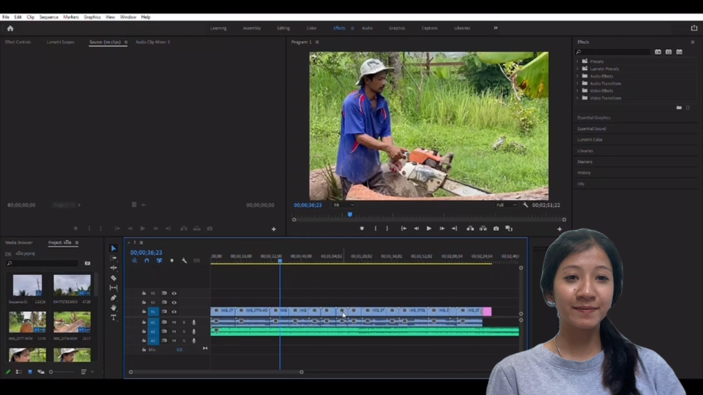

Adobe Lightroom เป็นโปรแกรมแก้ไขรูปภาพและจัดการภาพถ่ายที่ถูกพัฒนาขึ้นโดย Adobe Systems ซึ่งเป็นบริษัทที่มีชื่อเสียงในการพัฒนาซอฟต์แวร์สื่อสารสร้างสรรค์ต่างๆ รวมถึง Adobe Photoshop. Lightroom ถูกออกแบบโดยเฉพาะสำหรับการปรับแต่งภาพถ่ายดิจิทัลและทำการจัดการรูปภาพให้มีระเบียบและอาร์เรย์มากขึ้น เรามาดูฟังก์ชันและคุณสมบัติหลักของ Adobe Lightroom ดังนี้:
อัดและจัดการรูปภาพ: Lightroom ช่วยให้คุณสามารถอัดรูปภาพได้ง่าย โดยรองรับหลายรูปแบบไฟล์รูปภาพ เช่น RAW, JPEG, PNG และอื่นๆ และคุณสามารถจัดการรูปภาพได้ในที่เดียว.
ปรับแต่งภาพ: คุณสามารถปรับแต่งคุณภาพของรูปภาพโดยใช้เครื่องมือต่างๆ เช่นปรับสี, ความคมชัด, แสงและเงา, และแก้ไขข้อมูล EXIF ในรูปภาพ.
การตัดและปรับเท้าได้: คุณสามารถปรับขนาดของรูปภาพ, ตัดแต่งส่วนที่ไม่ต้องการ, และปรับเท้าได้ใน Lightroom.
การจัดการข้อมูลเมตาดาตา: คุณสามารถเพิ่มข้อมูลทางกายภาพและรายละเอียดเพิ่มเติมในรูปภาพของคุณ, ทำให้ง่ายต่อการค้นหาและจัดการรูปภาพของคุณ.
การสร้างอัลบั้ม: คุณสามารถสร้างอัลบั้มของรูปภาพและจัดเรียงรูปภาพของคุณในแฟ้มต่างๆ โดยใช้ Lightroom.
การนำเสนอ: Lightroom มีคุณสมบัติสำหรับนำเสนอรูปภาพที่คุณสร้างขึ้น และคุณสามารถสร้างสไลด์โชว์หรือแชร์รูปภาพของคุณในสังคมออนไลน์.
การจัดการการสำรองข้อมูล: Lightroom มีเครื่องมือสำหรับสำรองข้อมูลและคัดลอกไฟล์รูปภาพของคุณเพื่อป้องกันข้อมูลหายหรือเสียหาย.
ความสามารถในการแบ่งปัน: คุณสามารถแชร์รูปภาพของคุณผ่านแพลตฟอร์มออนไลน์อย่างง่ายด้วยการใช้ Adobe Creative Cloud หรือเซิร์ฟเวอร์อื่น.
การใช้งานแบบโทรศัพท์มือถือ: Adobe Lightroom มีแอปพลิเคชันมือถือที่ใช้ได้บนสมาร์ทโฟน ซึ่งช่วยให้คุณสามารถแก้ไขและจัดการรูปภาพของคุณทุกที่ทุกเวลา.
Lightroom มีรุ่นแบ่งค่าใช้งานแบบเสมอและรุ่นออนไลน์ที่คุณสามารถเข้าถึงผ่านบราวเซอร์ ด้วยการใช้ Adobe Creative Cloud คุณสามารถเก็บข้อมูลและการตั้งค่าต่างๆ ในรูปภาพของคุณในคลาวด์และเข้าถึงได้จากอุปกรณ์ต่างๆ ที่เชื่อมต่อกับบัญชี Adobe ของคุณ. Adobe Lightroom เป็นเครื่องมือที่มีประสิทธิภาพสำหรับนักถ่ายภาพมืออาชีพและผู้ที่ชื่นชอบการถ่ายภาพด้วยกล้องดิจิทัลทั่วไป.

Adobe Premiere Pro เป็นโปรแกรมตัดต่อวิดีโอและสร้างผลงานวิดีโอที่ถูกพัฒนาขึ้นโดย Adobe Systems ซึ่งเป็นบริษัทชั้นนำในด้านซอฟต์แวร์สื่อสารสร้างสรรค์ รูปแบบนี้ใช้สำหรับการตัดต่อวิดีโอทุกประเภท รวมถึงภาพยนตร์, วิดีโอสื่อสารสร้างสรรค์, วิดีโอบล็อก, วิดีโอแบบมัลติแคม, และอื่น ๆ นอกจากนี้ยังมีรูปแบบการทำงานที่หลากหลายเช่นการตัดต่อวิดีโอขนาดเล็กหรือวิดีโอที่มีความยากต่อการปรับแต่งสื่อต่างๆนี่คือคุณสมบัติและความสามารถหลักของ Adobe Premiere Pro:
การตัดต่อและจัดเรียงวิดีโอ: Adobe Premiere Pro ช่วยให้คุณสามารถตัดต่อวิดีโอและจัดเรียงฉากต่างๆ ในลำดับที่คุณต้องการ คุณสามารถตัดต่อ, ตัดตัว, แยกและรวมคลิปวิดีโอได้อย่างออกแบบ.
ปรับแต่งวิดีโอ: คุณสามารถปรับคุณภาพวิดีโอด้วยเครื่องมือต่างๆ เช่นปรับความคมชัด, ความสว่าง, ความคมชัดของสี, เสียงและอื่นๆ.
การเพิ่มเอฟเฟกต์และกราฟิก: Premiere Pro มีคอลเลกชันหลากหลายของเอฟเฟกต์ที่คุณสามารถใช้เพิ่มความสวยงามและความน่าสนใจในวิดีโอของคุณ รวมถึงการสร้างกราฟิกและเอฟเฟกต์เพื่อให้วิดีโอมีลูกเล่นและความสร้างสรรค์.
การเพิ่มเสียงและมิวสิก: คุณสามารถเพิ่มเสียงพื้นหลัง, ปรับคุณภาพเสียง, และเพิ่มเพลงพื้นหลังในวิดีโอของคุณ.
การสร้างตัวละครและการ์ตูน: คุณสามารถสร้างการ์ตูน 2D และ 3D, ตัวละครเครื่องราง, และเอฟเฟกต์พิเศษใน Premiere Pro.
การจัดการสื่อในโปรเจกต์: คุณสามารถจัดการสื่อต่างๆ ในโปรเจกต์ของคุณด้วยความสะดวก รวมถึงการนำเข้าและการสร้างอนิเมชัน, เสียง, และภาพนิ่ง.
การสร้างบรรยาย: Premiere Pro ช่วยให้คุณสามารถเพิ่มบรรยาย, คำอธิบายเสียง, และคำบรรยายภาพในวิดีโอของคุณ.
การรวมงานกับทีม: โปรแกรมนี้อนุญาตให้ทีมงานที่ใช้งานร่วมกันในโปรเจกต์เดียวกัน โดยใช้ Adobe Creative Cloud Libraries และการแชทภายในโปรแกรม.
การส่งออกและแชร์: คุณสามารถส่งออกวิดีโอในรูปแบบที่แตกต่างกันเช่น MP4, AVI, หรือไฟล์เพื่อใช้กับสื่ออื่น ๆ และแชร์งานของคุณผ่านแพลตฟอร์มออนไลน์หรือโซเชียลมีเดีย.
Adobe Premiere Pro เป็นเครื่องมือตัดต่อวิดีโอและสร้างผลงานวิดีโอที่มีความสมบูรณ์และมีคุณภาพสูง ใช้งานได้ทั้งในระดับมืออาชีพและในการสร้างวิดีโอทั่วไป มันเป็นเครื่องมือที่สำคัญสำหรับนักวิดีโอและผู้สร้างเนื้อหามัลติมีเดียที่มีความทุ่มเทในการสร้างสื่อแบบมัลติมีเดียที่น่าสนใจและมีคุณภาพสูง.